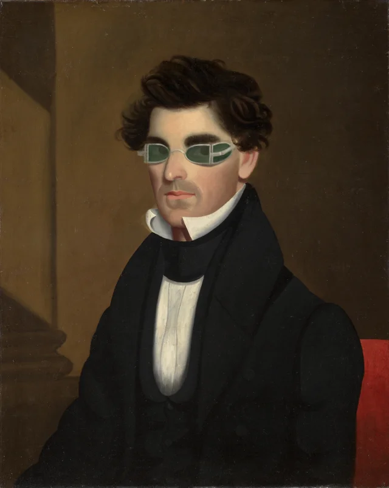
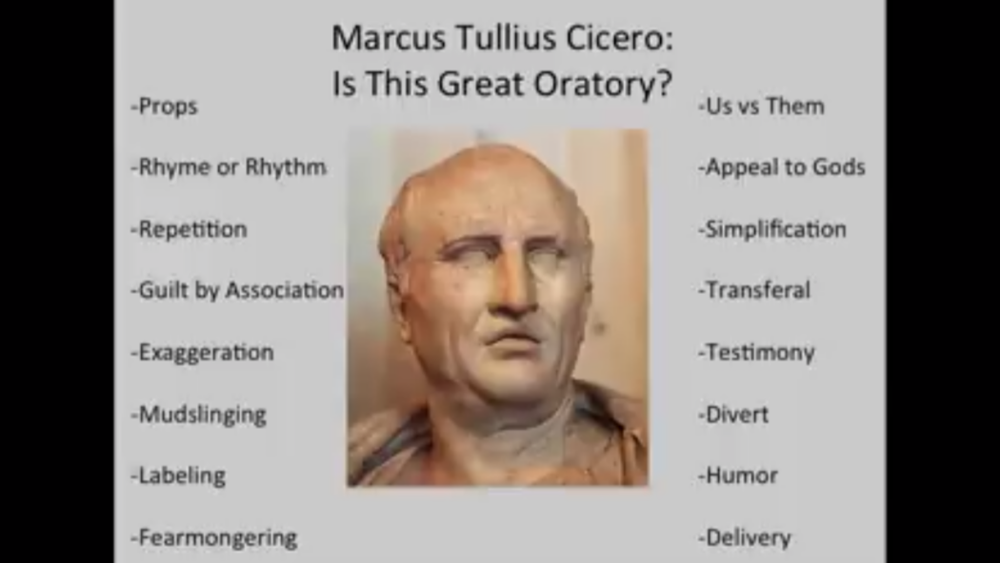
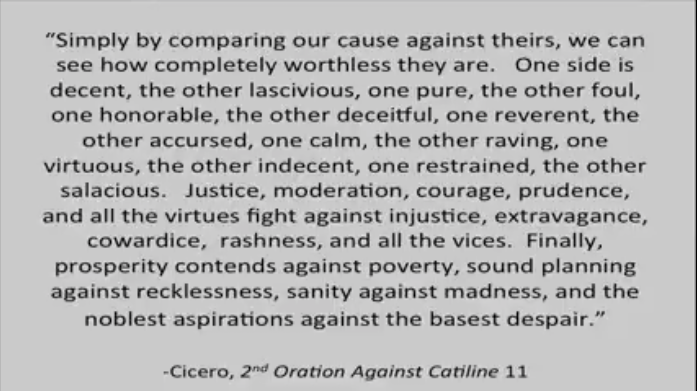
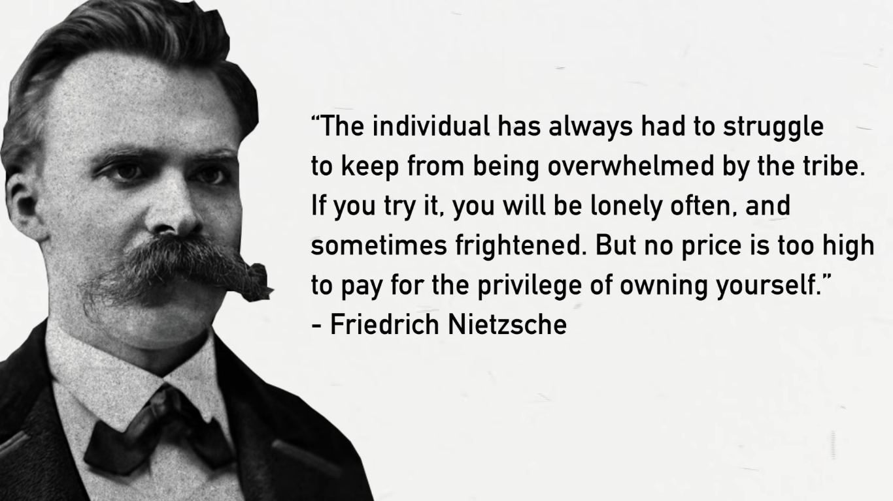

Movies
- Manchester by the Sea
- Borg v/s Mccnroe
- There will be blood
- Citizen Kane
- The assassination of Jesse James by coward Robert Ford
- Bridge of Spies
- Beautiful Boy
- Amadeus
- Asuran
- Ayyappanum Koshiyum
- Tummbad
- Angamaly Diaries
- Kumbalangi Nights
- Premam
- Pariyerum Perumal
- Grave (Raw)
- A Prophet
- Aamis
- The Lobster
- The Killing of a sacred Deer
- Incendies
- Mommy
- Tom at the Farm
- I killed My mother
- The Lives of others
- The Hunt
- Another Round
- La Haine
- The Seventh Seal
- Stalker
- Mirror
- City of God
- The secret in their Eyes
- Rush
- The Handmaiden
- Rashomon
- High and Low
- Seven Samurais
- The Bad sleep well
- Ikiru
- Burning
- Peppermint Candy
- Oasis
- Poetry
- Secret Sunshine
- Thirst
- I saw the Devil
- Forgotten
- The wailing
- Spring Summer Fall Winter and Spring
- A mother
- Memories of Murder
- Memoirs of Murderer
- Confession of Murder
- Meel Pather (MileStone)
- Paan Singh Tomar
- Milka Singh
- Call me by your name
- Close-Up
- Munich
- Sopranos
- Peaky Blinders
- Deutschland 83
Here are some underrated movies that I found worth sharing.
Truth and Justice
It is the story of an uncompromising man whose soul is corrupted by the relentless pursuit of his dream.

A sun
A family of four fractures under the weight of unmet expectations, unexpected tragedy, and uncompromising pride.

Series
Some Series that I liked.

Books
Some Books that I liked.
Mein Kampf
Purged

The Communist Manifesto
A good read. Highly Recommend

Photos
Some Pictures that I liked.
Impactful



Random